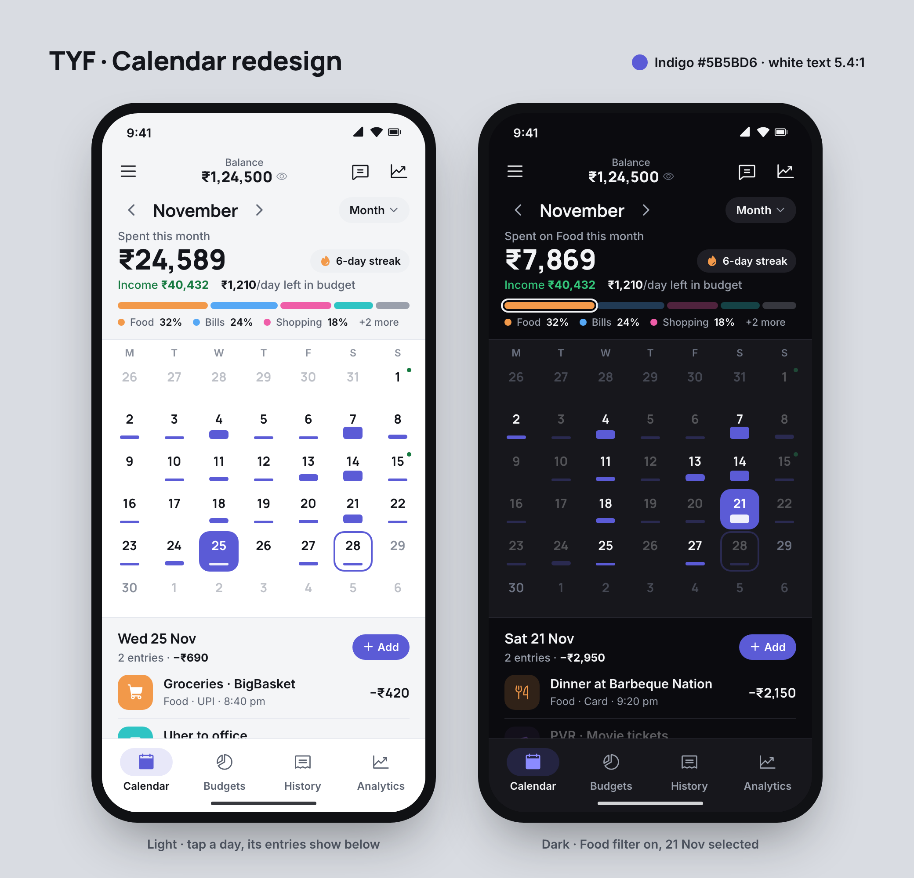
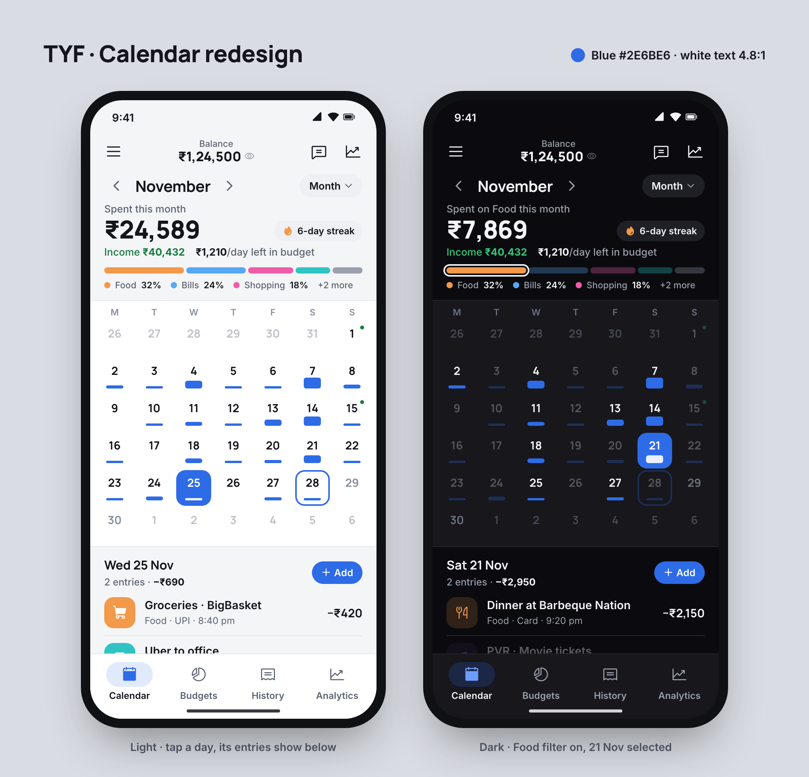
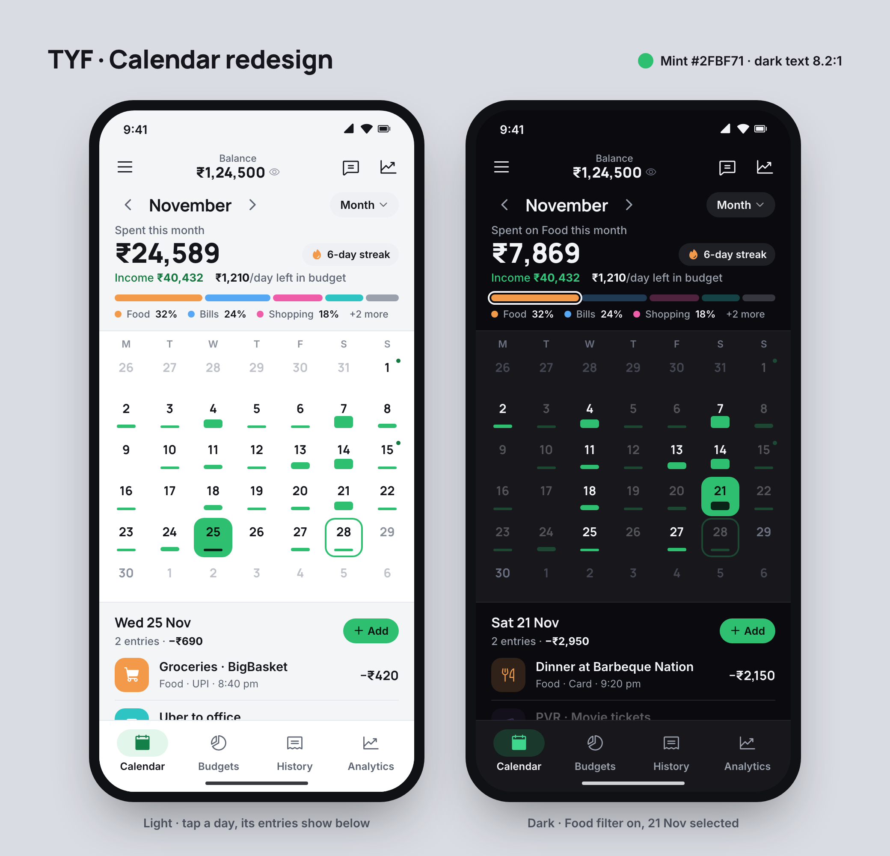

<title>TYF Calendar Colours</title>
<meta name="claude:viewport-fit-sides" content="cover">
<style>
/* Layout: a single column of three labelled mockup boards, each full width. */
:root {
  --bg: #F1F2F5; --fg: #14161C; --muted: #5D6472; --card: #FFFFFF; --line: #E2E5EB;
  --display: "Manrope", "Inter", system-ui, sans-serif; --body: "Inter", system-ui, sans-serif;
}
@media (prefers-color-scheme: dark) { :root:not([data-theme="light"]) { --bg: #0E0E12; --fg: #F3F4F6; --muted: #9AA0AC; --card: #17171C; --line: #26262E; color-scheme: dark } }
:root[data-theme="dark"] { --bg: #0E0E12; --fg: #F3F4F6; --muted: #9AA0AC; --card: #17171C; --line: #26262E; color-scheme: dark }
body { background: var(--bg); color: var(--fg); font-family: var(--body); }
main { max-width: 1100px; margin: 0 auto; padding-block: 40px 64px; padding-left: max(16px, env(safe-area-inset-left, 0px)); padding-right: max(16px, env(safe-area-inset-right, 0px)); display: grid; gap: 40px; }
header h1 { font-family: var(--display); font-size: clamp(26px, 4vw, 36px); font-weight: 800; letter-spacing: -0.02em; margin: 0 0 8px; text-wrap: balance; }
header p { margin: 0; color: var(--muted); font-size: 15px; line-height: 1.55; max-width: 65ch; }
section { display: grid; gap: 12px; }
section h2 { font-family: var(--display); font-size: 20px; margin: 0; display: flex; align-items: center; gap: 10px; }
section h2 i { width: 16px; height: 16px; border-radius: 50%; display: inline-block; }
section p { margin: 0; color: var(--muted); font-size: 14px; line-height: 1.5; max-width: 70ch; }
figure { margin: 0; background: var(--card); border: 1px solid var(--line); border-radius: 16px; overflow: hidden; }
figure img { display: block; width: 100%; height: auto; }
</style>
<link rel="stylesheet" href="https://fonts.googleapis.com/css2?family=Inter:wght@400;500;600&family=Manrope:wght@700;800&display=swap">
<main>
  <header>
    <h1>Calendar screen, three colours</h1>
    <p>One brand colour, flat backgrounds, no gradients. The calendar runs edge to edge, and the selected day's transactions show below it. They change when you tap another day, and the list scrolls. Each board shows light mode and dark mode. Dark mode also has the Food filter on (tapped in the split bar), so only food days stay bright.</p>
  </header>
  <section>
    <h2><i style="background:#5B5BD6"></i>Indigo</h2>
    <p>#5B5BD6 with white button text (5.4:1). In dark mode, indigo text and icons use a lighter #8B8BFF.</p>
    <figure></figure>
  </section>
  <section>
    <h2><i style="background:#2E6BE6"></i>Blue</h2>
    <p>#2E6BE6 with white button text (4.8:1), the blue the app uses now.</p>
    <figure></figure>
  </section>
  <section>
    <h2><i style="background:#2FBF71"></i>Mint</h2>
    <p>#2FBF71 needs dark text on buttons (8.2:1). It's close to the income green, so spend bars and income look alike.</p>
    <figure></figure>
  </section>
</main>
